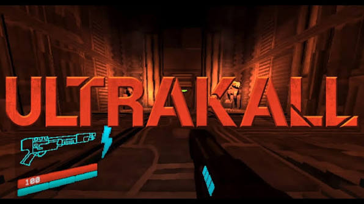
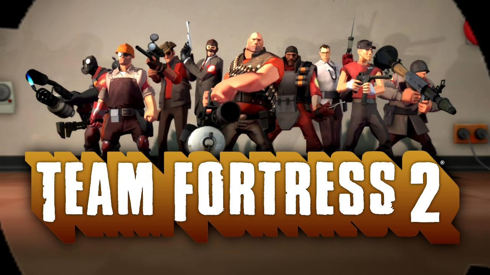
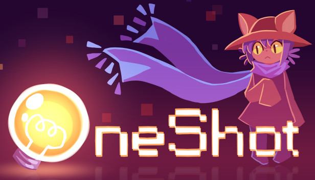
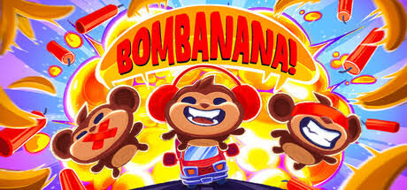
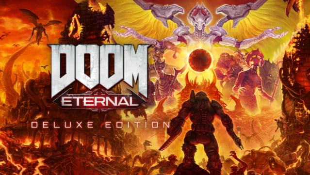
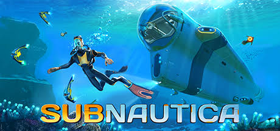

- ULTRAKILL
- ULTRAKILL — динамичный шутер «старой школы» от первого лица,
который совмещает в себе фишки из классических шутеров,
как серия Quake, современных шутеров, как Doom (2016),
и слешеров типа Devil May Cry.
- Ultrakill is a fast-paced first-person shooter with an emphasis on movement and stylish techniques.
The player must make their way through an interpretation of Dante's layers of Hell, with three acts each made up of three layers being divided into multiple levels.
As of September 2026, only Act I and Act II have been fully released, with only the first two layers of Act III being available.
The player battles enemies using an arsenal of weapons, having a primary and alternate attack, and various robotic arms.
These have unique interactions with each other, evoking the combination attacks of games like Devil May Cry.
- MANKIND IS DEAD
BLOOD IS FUEL
HELL IS FULL (если что то переводчик в помощь)

- TeamFortress2
- Team Fortress — многопользовательская модификация к компьютерной игре Quake компании id Software.
Team Fortress была разработана и написана австралийцами Робином Уокером, Джоном Куком и Яном Кофли в 1996 году.
Данная модификация была переработана в отдельную игру под названием Team Fortress Classic и выпущена в 1998 году компанией Valve Software.
- Оригинальный Team Fortress был создан как модификация для игры Quake и выпущен под лицензией freeware 24 августа 1996 года. Первый выпуск Team Fortress для QuakeWorld (v2.0) был создан 22 декабря 1996 года. Модификация была очень успешной, так что Уокер, Кук и Кофли сформировали компанию Team Fortress Software, для разработки Team Fortress 2 как коммерческой модификации для Quake II.
- "паровозика" не было в игре

- One Shot
- Игра представляет собой квест. Игрок, управляя кошкоподобным персонажем по имени Нико, должен находить различные предметы, комбинировать их и использовать на окружении для продвижения по сюжету. Игра выполнена в пиксельной 2D-стилистике с видом сверху.
- OneShot — сюрреалистическая приключенческая игра — головоломка, разработанная Future Cat LLC. Основанная на бесплатной версии 2014 года, она была выпущена в Steam 8 декабря 2016 года. Также игра была выпущена для Nintendo Switch, PlayStation 4, и Xbox One 22 сентября 2022 под названием OneShot: World Machine Edition.i
- Игра начинается с пробуждения главного героя, Нико, в тёмном и незнакомом мире. Он использует находящийся в комнате компьютер, который обращается напрямую к игроку через диалоговое окно за пределами игрового окна, используя имя его компьютера. Затем Нико находит солнце этого мира, принявшее форму лампочки. Выходя из здания, протагонист видит огромную башню, чья вершина скрывается далеко в небе.

- BOMBANANA
- «BOMBANANA!» — это хаотичная, взрывоопасная и весёлая кооперативная многопользовательская игра на троих, где у каждого игрока есть только часть информации: слепая, глухая и немая обезьяны должны работать сообща, чтобы обезвредить бомбу, иначе случится БАБАХ! Выдержит ли ваша дружба это суровое испытание?
- Слепая обезьяна: вы не видите бомбу, но можете её потрогать! К сожалению, вы не видите цвета и не можете читать экраны. В этом вам придётся полагаться на своих товарищей по команде.
Немая обезьяна: только вы можете читать руководство по обезвреживанию бомб. Если бы вы только могли рассказать остальным то, что знаете…
Глухая обезьяна: вы видите бомбу и своих друзей, которые отчаянно вам жестикулируют. К сожалению, вы ничего не слышите, но захотели бы вы вообще что-то слышать в этой ситуации?
- Совместная игра на троих. Ни больше, ни меньше — требуются ровно три обезьяны.

- DOOM
- Doom (стилизованное написание — DOOM) — серия компьютерных игр в жанре шутера от первого лица. Серия насчитывает шесть основных игр, первая из которых вышла в 1993 году, а последняя — Doom: The Dark Ages — 15 мая 2025 года, а также ряд ответвлений. Все 6 основных игр были разработаны компанией id Software, в то время, как разработка побочных игр доверялась в том числе и различным сторонним студиям.
- В 1992 году американская компания id Software выпустила Wolfenstein 3D, игру, которая была высоко оценена критиками, получила признание среди игроков и стала коммерчески успешной. После выхода игры Джон Кармак, один из программистов компании, начал заниматься изучением новых технологий для новых игр компании, пока остальная команда занималась разработкой игры Spear of Destiny, которую id Software должна была разработать по договору с компанией FormGen.
- В 1997 году для игровой приставки Nintendo 64 была выпущена игра Doom 64, которая была разработана и выпущена компанией Midway Games. Сюжетно является продолжением Doom II: Hell on Earth и сборника Final Doom. Отличительной особенностью Doom 64 от предыдущих частей серии были перерисованные текстуры и спрайты врагов

- Subnautica
- Subnautica is a 2018 action-adventure survival game developed and published by Unknown Worlds Entertainment. The player controls Ryley Robinson, a survivor of a spaceship crash on an alien oceanic planet, which they are free to explore. The main objectives are to find essential resources, survive the local flora and fauna, and find a way to escape the planet.
- he main objective is to explore the ocean of the alien planet and survive its dangers while completing tasks to advance the plot. Players can collect resources and blueprints, construct tools, build bases and submersibles, and interact with the planet's wildlife.
- The game supports VR headsets. (переводчик в помощь)
